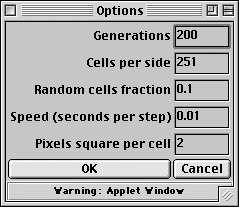

Use this rule and reset the Options menu as indicated.
|  |
(a) Run the CA from a first generation consisting of a single live cell somewhere near the middle of the top line of the window. Note the pattern you obtain.
(b) Experiment with different starting configurations. Can you produce anything substantially different from the first picture?
Here is the answer.
Return to Cellular Automata Explorations.